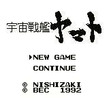

Space Cruiser Yamato (VGB)

This appears to be a war strategy simulation where your army is the heroic
crew of the Yamato.
| Level |
Password |
| 1 |
N T D S 6 O I L |
| 2 |
O B I D Y 7 H L |
| 3 |
P Z M Q Q 5 J L |
| 4 |
Q M T G G G G J |
Return to Emulator Table of Contents
Last Modified 12 Sept 1996
Created 2 Sept 1996
Luis A. Cruz
cruzl@ccs.neu.edu